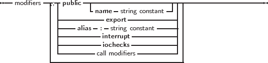
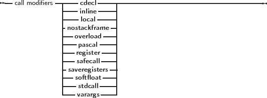

A function or procedure declaration can contain modifiers. Here we list the various possibilities:
_________________________________________________________________________________________________________
Modifiers


___________________________________________________________________
Free Pascal doesn’t support all Turbo Pascal modifiers (although it parses them for compatibility), but does support a number of additional modifiers. They are used mainly for assembler and reference to C object files.